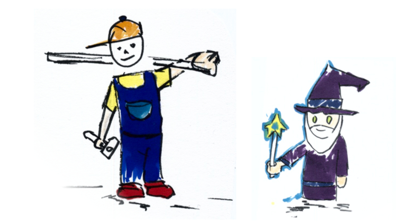
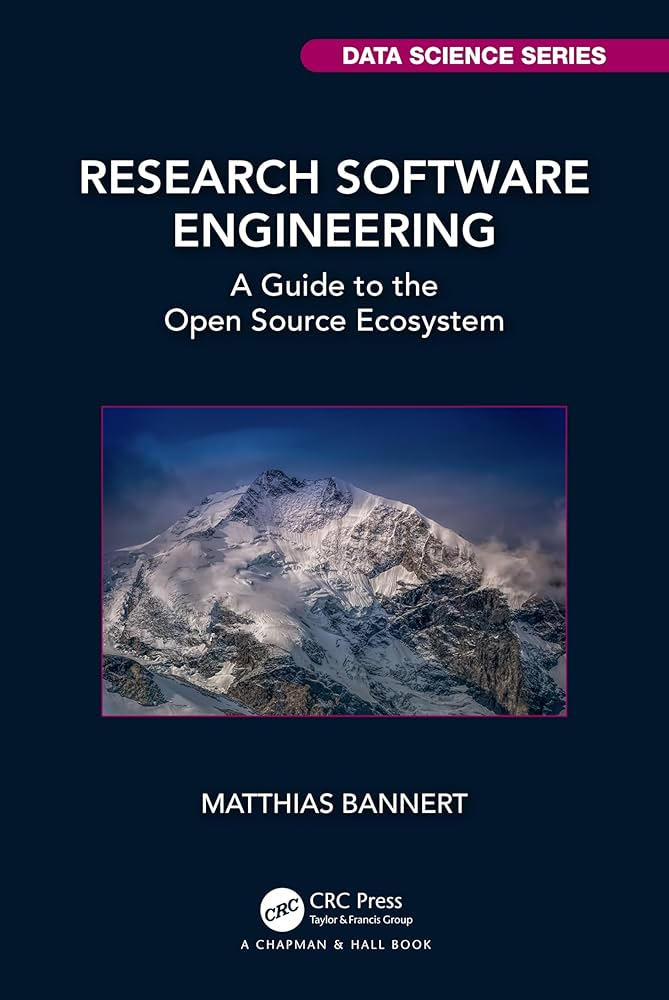

Hacking for Science is back.

How Much Programming Does a Researcher Need?
The vast majority of data has been created within the last decade. As a result, more and more research fields are considering programming to analyze data. Hacking for Science embraces a programming approach to data engineering and analytics, as it aims to leverage field-specific expertise with the help of the open source ecosystem. In addition to its popular, demand driven, hands-on programming examples, the most significant value of the course may lie in its big-picture understanding. How do Python, R, Julia, GitHub, IDEs, git, Visual Studio Code, geoJSON, Postgres, containers, cloud, Kubernetes and Continuous Integration relate to each other? And do I – all of a sudden – need them all for my research1?
Online Teaching and Coaching Sessions
Born during the pandemic, Hacking for Science is a native online course specifically designed to be interactive and engaging. The course consists of four two-day blocks, all spaced at least several weeks apart, with a flipped classroom concept in mind: after two days of input sessions, there is a break of multiple weeks that allows for self-study time. This self-learning time is accompanied by a course matrix chat space and the book Research Software Engineering, which itself was created using many of the open source technologies discussed in the course2. The chat allows participants to interact with each other in asynchronous fashion as well as with the lecturer. Participants decide for themselves which topics raised during the input sessions they wish to explore in more detail.

Teaching & Coaching Sessions
Registration via the ETH course catalog will open soon. If you are not an ETH student and/or have further questions, please do not hesitate to contact us: heim [ at ] kof.ethz.ch
While the first two blocks of the course focus on teaching and building a common denominator understanding of the open source ecosystem as a toolbox, the latter two blocks have more of a coaching mindset. Similar to coaching in sports, the course observe participants doing their work offer ways to adapt one’s own patterns and learn new techniques and industry standard workflows. Participants can bring their (PhD) projects, everyday programming issues and patterns to class. The course builds groups of participants with common problems and then discusses ways to improve. Input ranges from workflow to source code, while group outputs range from head-first dives into cloud computing to R Shiny dashboards or profile websites. Each group will have the opportunity to submit an ungraded programming exercise and receive feedback on this exercise at the end of the semester. Live sessions will take place on Thursdays and Fridays from 10:00 a.m. to 1:00 p.m. and 10:00 a.m. to 2 p.m. including sufficient breaks.
Preliminary Schedule
Block 1
Thursday: September 26, 2024
Friday: September 27, 2024
Block 2
Thursday: October 24, 2024
Friday: October 24, 2024
Block 3
Thursday: November 21, 2024
Friday: November 22, 2024
Block 4
Thursday: December 5, 2024
Friday: December 6, 2024
Links
Course Details (ETH Catalog) | RSE Book | h4sci Matrix chat room (#h4sci:staffchat.ethz.ch)
References
Footnotes
Readers who speak German may be interested in the discussion of this question for the profession of empirical economics (Bannert 2022-03)↩︎
The book will be available as part of the [CRC Data Science Series from early April 2024(https://www.routledge.com/Research-Software-Engineering-A-Guide-to-the-Open-Source-Ecosystem/Bannert/p/book/9781032261270)]. In addition we offer a free online version of the book on GitHub.↩︎